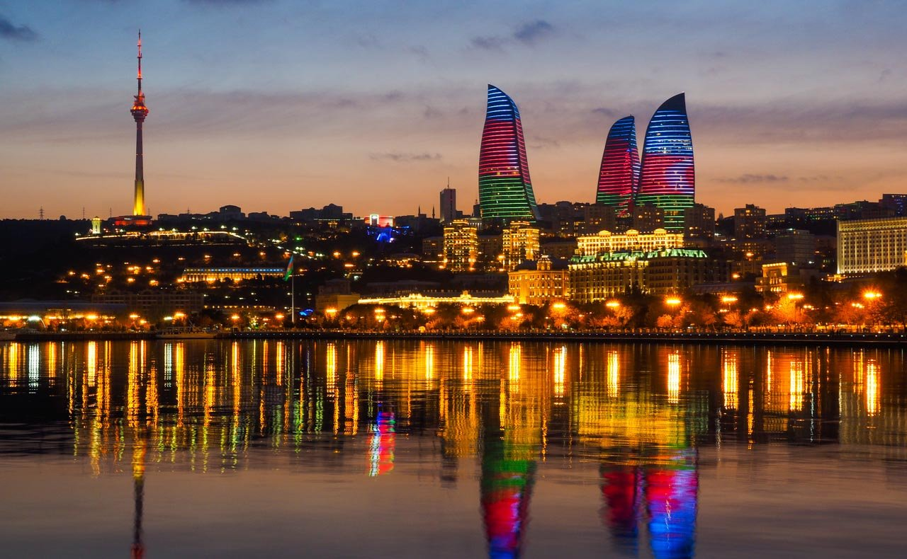
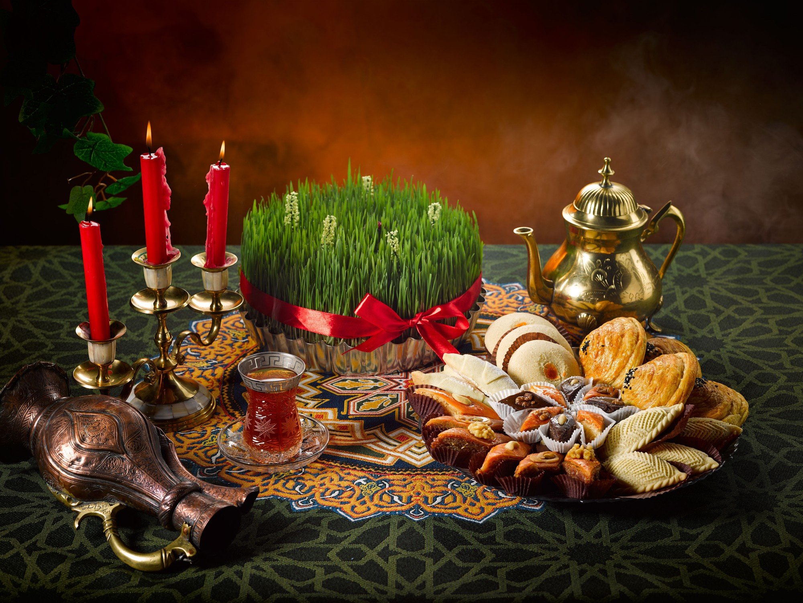
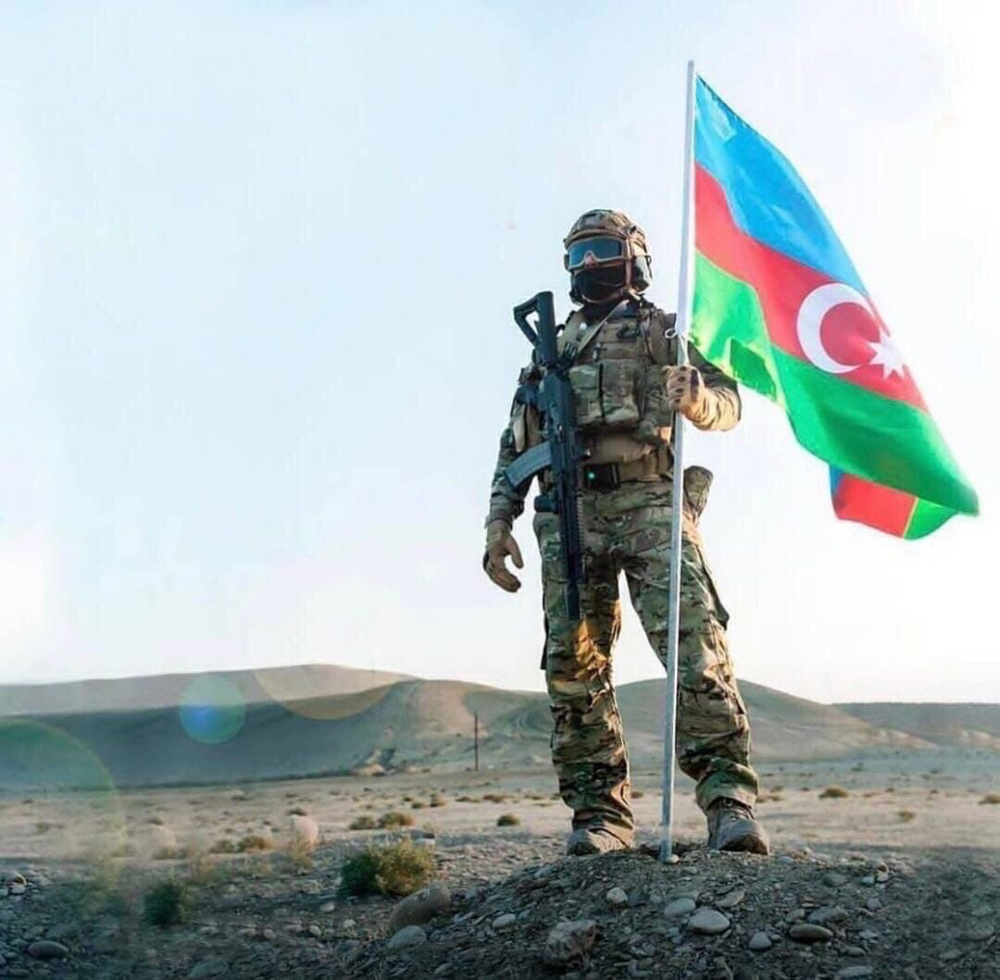
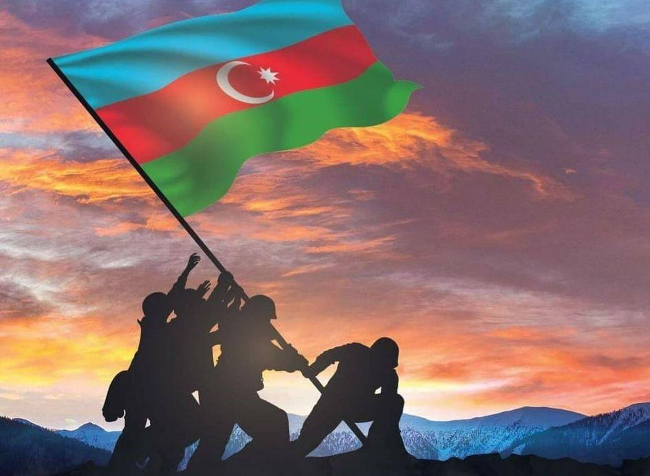
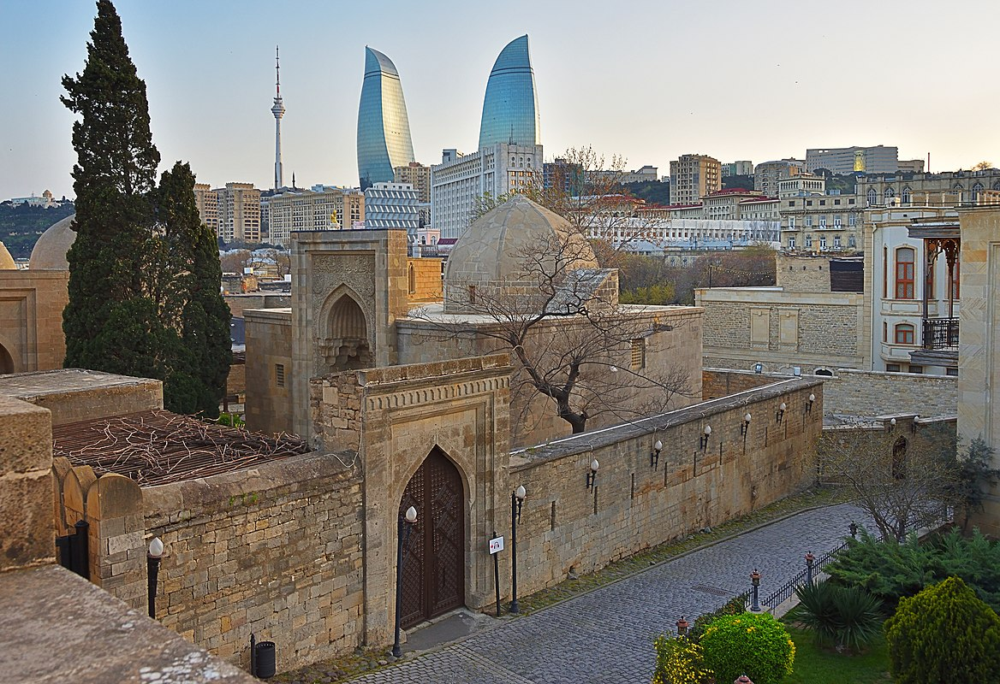
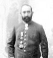
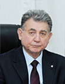
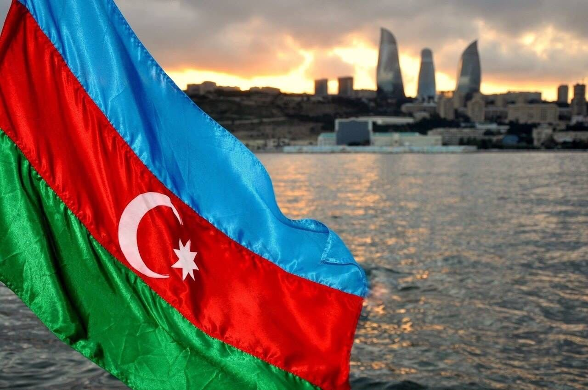

Расположенный рядом с Гобустаном, также является территорией, где обитал древний человек[источник не указан 820 дней]. Об остатках костров доисторического человека свидетельствуют небольшие скопления древесного угля, обнаруженные в Бинагади. В 1936 году у берега Зыхского озера в 10 км от Баку было найдено кремнёвое ядро, похожее на орудие палеолитического человека. А в районе между Биби-Эйбатом и Баилово археолог Г. Асланов обнаружил наскальные изображения быков, похожие на гобустанские. Наскальные изображения выявлены в ряде пунктов на Апшеронском полуострове в зоне посёлков Мардакян, Шувелян, Зиря, Сураханы, Рамана, Гала (изображения пляшущих людей — первый памятник на Апшероне, относящийся к переходному периоду от каменного века к началу бронзы) и у начала дамбы, соединяющей материк с островом Пир-Аллахи (изображения безоаровых козлов, датируемые II и началом I тысячелетия до н. э.).Такие находки, как кувшин III—I вв. до н. э., найденная во время археологических раскопок во дворе дворца Ширваншахов, фрагменты керамической посуды IV—I вв. до н. э. и I вв. н. э. и железное навершие стрелы, найденные на территории мечети Мухаммеда, женская глиняная стаутэтка эпохи железа, античные базы колонн из Ичери-шехер позволяют датировать старую Бакинскую крепость как город античного периода[источник не указан 820 дней].
Вопрос о времени возникновения Баку как населённого пункта и города до сих пор не уточнён из-за слабой изученности его в археологическом отношении. Считается, что людей в эти места привлекало наличие в прибакинских недрах нефти и соли и выгодное местоположение на морском побережье с прекрасной естественной гаванью. Азербайджанский историк Сара Ашурбейли считает, что в далёком прошлом на территорию Апшерона проникали племена как с севера, через Дербентский проход, так и с юга, из Гобустана, и, смешавшись с местными аборигенами, оседали на Апшероне[2].
Баку принадлежал к типу городов, которые возникали из древних поселений, обнесённых крепостной стеной и рвом. В I веке Баку был уже небольшим портовым городом. О пребывании римских войск близ Баку свидетельствует латинская надпись, сделанная между 84 и 96 годами у подножья горы Беюк-даш, а также название селения Рамана на Апшероне

Про Традицию
Особое значение для азербайджанцев играет чай. В любом азербайджанском доме гостю первым делом предлагают чай. Всегда с чая начинается застолье, им же оно и заканчивается. Национальной посудой для питья чая является «армуду» стакан, который по форме напоминает грушу (по другим источникам классическую фигуру восточной женщины)[3].
Подача чая гостям-одна из древних традиций Азербайджана. Азербайджанский народ, как правило, предпочитает макать в чай кусочек сахара, а затем кусочек и потягивать чай, вместо того чтобы добавлять в него сахар. Символом гостеприимства считается подача чая непосредственно перед основным приемом пищи с различными видами варенья (Клубника, инжир, абрикос, ежевика, вишня, грецкий орех), сладостей и фруктовых десертов. Чайный стол не обходится без лимона. они подают горячий чай в чашки или Armudi стекла (грушевидные стеклянные). Armudi стекло-это символ чайной церемонии. Главное в процессе приготовления чая техника кипятка. Запах и вкус свежего самоварного чая (самовар-металлическая емкость для кипячения воды) уникален и не может сравниться с другими чайными запахами. Азербайджанская семья из четырех человек употребляет около 500 г чая в месяц и около 6-8 кг в год.
Чай подают на любой церемонии в Азербайджане, будь это похороны или свадьба. Является ли чай сладким или без сахара показывает решение или, по крайней мере, мнение родителей девушки о браке в процессе сватовства. Сахар-ключевой показатель их согласия.
Праздник Новруз

Праздник Новруз отмечается в день равноденствия (с 20 или 21 по 25 марта), начала астрономического лета в Северном полушарии. Ряд народов связывали приход весны с возрождением природы, устраивали по этому поводу народные гуляния и отмечали его как начало нового года. С давних времен в Азербайджане, Иране, Афганистане, Таджикистане, Узбекистане и многих восточных странах приход весны и новый год отмечали гуляньями. 21 марта — первый день официального календаря в Иране и Афганистане.
30 сентября 2009 года праздник Навруз был включен в список нематериального культурного наследия ЮНЕСКО, а 23 февраля 2010 года на заседании 64-й сессии Генеральной Ассамблеи ООН 21 марта был объявлен «Международным днем Навруз». . Поскольку в Азербайджане широко отмечается праздник Новруз, накануне праздника объявляются нерабочие дни. Происхождение праздника Новруз древнее. После распространения ислама в странах Ближнего Востока и Средней Азии Арабский халифат стал следовать традициям и праздникам народов этих стран. Многие народы до сих пор сохранили ряд традиций и игр, рожденных истинной природой весеннего праздника.
Почтовая марка СССР. Новруз в Азербайджане
Средневековые авторы показывают, что даже после распространения ислама в странах Востока весенние традиции и верования земледельческого календаря занимают прочное место в празднике Новруз. Абу Рейхан Аль Бируни рассказал о различных традициях, связанных с праздником Новруз, о причинах его создания, о традициях, распространяемых среди народа по случаю этого праздника, и отметил, что праздник Новруз – это настоящий светский праздник, связанный с пробуждением природы и началом сельского хозяйства.
Низамул Мульк в своей работе «Политика» упомянул праздник Новруз как массовый государственный праздник, проводимый в связи с приходом весны. Приход Новруза также описывается и восхваляется в лирических поэмах под названием «Бахарийя», которые широко распространены в классической восточной, в том числе азербайджанской поэзии.
В праздник Новруз проводятся различные игры, в том числе атарма, халай, бановше, ждыр-анзели, коса-коса и подобные игры.
Средам
Согласно некоторым древним верованиям, Вселенная была создана из 4-х стихий – воды, огня, земли и ветра. Навруз празднуется в 4 среды каждый год, перед равноденствием. Влюбленные также говорили в своих телесных документах «Я родился от Аба, огня, хака, бадана», то есть человек связан с водой, огнем, землей и гривой.
1.Первая называется «Водяная среда». Весной лед тает, реки оттаивают, земля просыпается вместе с деревьями, и везде потихоньку оживает, земля потихоньку начинает мокнуть, обыкновенно девушки приносили прохладную, сладкую воду из родников, разбрызгивайте его по дому и умывайте лица.
2.Вторая называется «Огненная среда». Потому что ближе к весне солнце потихоньку прогревает почву, подготавливает ее к созиданию. Костры будут зажжены в среду у костра. Они зажигали свечу от имени каждого члена семьи. Были изготовлены хончи.
3.Третий - Ветер Среда. Другими словами, ветер качает чуть проснувшуюся землю, тоскующие цветы по только что наступившей весне, распускающиеся почки деревьев.
4.Четвертая – Земная среда. Мать-природа пропитала землю водой, согрела ее солнцем, подготовила к созиданию. Вот почему они начинали первую весеннюю посадку во вторник на Масленицу. Старухи замачивали пшеницу со словами: «Самени, спаси меня, я буду сажать тебя каждый год».
На праздник Новруз пекут особые сладости. Этими сладостями украшают хончи среды и праздника. Вот сладости, которые нужно приготовить во время праздника: гогал, шакербура, бадамбура, пахлава. Каждая испеченная сладость уподобляется небесному светилу. Поют солнце Гогал, луна Шекербура, звезды пахлавы.
Коса и Келал – атрибуты Навруза. Лысый означает зиму, а Коса означает лето.
В праздник Новруз совершаются следующие обряды:
Кинуть в сумку. Позже сумку заменила шляпа. Однако в Азербайджане бросание шапки, являющейся символом чести и усердия, в дверь за долю не приветствуется и не критикуется. Они не вернут пустую сумку, брошенную в дверь.
Перейти к гаданию. Если из тайно подслушивающего дома слышится приятный разговор, это знак того, что желание сбудется.
Прыжки с костра. При прыжке с костра произносится такая фраза: «Пусть мой вес – мой успех сгорит в огне».
Посмотрите гадание по кольцу. Девушки прикрепляют кольцо к пряди волос и держат его на стакане с водой. Количество ударов кольца о стекло – признак того, что девушка выйдет замуж в этом возрасте.
Выращивание солода. Это знак прихода весны и пробуждения растений.
Яичный бой. В результате игры одна из сторон выполняет требования другой.
Посетить. На Навруз они посещают дома своих родственников и соседей и приносят им Новрузскую долю.
Посещение пожилых людей. Посещают пожилых и больных людей, поздравляют их с праздниками.
Зажги свечу. В Навруз зажигают столько свечей, сколько в семье.
Примирение обид. Никто не должен быть сварливым в Новруз. Все обиды должны быть улажены.
Лысеть. Это танец, исполняемый азербайджанским народом с древних времен. Это означает единство людей.
Петушиные бои. Для этого разводят специальных бойцовых петухов.
Кухня
Одним из факторов, оказывающих сильное влияние на азербайджанскую кухню, является печь (тандыр, кура, букари, кулфа, чала, оджак, лист, шашлык и др.). На Куре в основном в глиняных горшках готовят различные хлеба, мучные кондитерские изделия, пити и бозбаши. Мангал, в отличие от других печей, предназначен в основном для приготовления шашлыка (шашлыка). Кульфа, которая по своей структуре похожа на большой шар и в настоящее время используется редко, содержит хлеб кулфа, комбе и т. д. был приготовлен. Различают «кованые», «бадли» и «кирпичные» типы подземных и наземных печей. В тандыре готовят различные лаваши, тандырный хлеб, беймчореи, различные блюда, кондитерские изделия. Более твердые блюда готовили в пароварке, своего рода закрытой печи. Котел подвешивался к крючкам на стенах парилки. Отсюда и выражение «подвесить горшок», которое до сих пор употребляется в азербайджанском языке в значении «готовка». В угольках пара варили картошку, кукурузу, а иногда и тонкие кусочки мяса.
Один из видов печей, которыми активно пользуются азербайджанцы, – это листовые печи. Блюда готовили в Сак. В глиняных и каменных подносах в основном юха, боздацкие хлебы, кутабы, складни, фасли из слоеного теста, складни и др. был приготовлен. Они переворачивали садж и насыпали внутрь гальку и гальку и пекли на нем тонкий хлеб сангек (саг сангек). Внутри тарелки есть саджичи чиз-биз, печень саджичи, курица саджичи, картофель саджичи и т.д. готовился. Блюда под простыней чаще всего готовятся в углях, накрытых простыней. Блюда, приготовленные между двумя листами, называются сакара. При этом один из листов выполняет роль кастрюли, а другой – крышки. Условно к печам можно отнести и самовар. Дают вскипятить жидкость, приготовить настой. Возраст самого древнего глиняного сосуда типа самовара, найденного в Шекинском районе, составляет около 4 тысяч лет. В прошлом в таких емкостях готовили различные напитки.
Религия и верования также повлияли на азербайджанскую кухню (например, свинина считается харамом, вино запрещено и т.д.).
Посуда, используемая в азербайджанской кухне, изготавливается из кожи (мотал, чилги, эйме, тулуг и др.), глины (кувшин, бадя, челимек, нехра, чаша и др.), дерева (нехра, табаг, охлов, юхаяян и др.). ), металлические (горшок, сатил, сини, маймеги и др.), изготавливались из камня. Изготовление мотальской соли, мотальского сыра и приготовление пастушьего пирога было возможно только в кожаных емкостях. Кожаные куртки также использовались как речные. Медные кастрюли и сковородки позволяли эффективно использовать тепло. Чаши и кастрюли специальной формы с киповыми крышками в основном используются для приготовления диетических блюд, варки блюд и максимального сохранения витаминов в продуктах.
В азербайджанской кухне также широко распространены соленья (уксус), соленья (дузагома) и тутми. Уксус делают из спелого винограда, а абгора — из незрелого. К уксусу и соли добавляют овощи (огурцы, помидоры, баклажаны, перец, чеснок, фасоль, петрушку и др.), фрукты (вишню, чернику, яблоки, оливки, сливы и др.).
Многие блюда (гуймаг, умач, хаш, хорра и др.), напитки и настои издревле использовались для диеты и лечения. В азербайджанской кухне особое место занимают диетические, лечебные, обрядовые, ритуальные и праздничные блюда. На праздник Новруз готовят различные блюда, такие как пахлава, шакербура и самани халва, на праздник Хыдыр Наби готовят говот, на праздник малый чила готовят хадик, когда у детей и пожилых людей старше 100 лет выпадают зубы, а арбуз чила режут. (женский праздник). Яйца, приготовленные в праздник Новруз, окрашивают в зеленый цвет (символ озеленения природы) и красный цвет (символ солнца). На праздник Азер готовят жаркое и заливают в банки, варят чизбиз и каш. В последнюю неделю месяца азер (21 ноября-21 декабря) готовят гуличи и кульче в связи с приходом большого чилла (мужского праздника). Халву нужно подавать на траурных вечерах.
Азербайджанская кухня имеет сходства и общие черты с традиционными блюдами кавказских и восточных народов. Это определяется культурно-экономическими связями, родством и другими факторами, которые исторически существуют между этими народами. Например, сходство азербайджанской кухни с едой и напитками тюрков, татар, казахов, узбеков, кыргызов, туркмен, уйгуров и других тюркских народов обусловлено их историческим родством, а сходство с ираноязычными народами - тот факт, что мы разделяем одну и ту же географию в течение длительного времени.
В результате многовековых взаимоотношений с соседними народами азербайджанская кухня обогатилась как сама, так и кухня соседних народов. Бозбаш, долма, шишлык, плов, жаркое, хангал, халва, суп, басмир – изысканные блюда азербайджанской кухни, стали излюбленными блюдами грузинской кухни. Хотя азербайджанская кухня развивалась в основном на местных традициях, в последние годы она обогатилась европейскими блюдами, такими как борщ, суп, котлеты.
Первые разновидности пищи в Азербайджане появились в то же время, когда продукты питания, предоставленные природой, были переработаны и превращены в продукты питания и сделаны съедобными, то есть в период собирательства и первобытной охоты.
Информация о футбольной команде
Клуб был основан в начале 1950-х годов. После завершения строительства Агдамского городского стадиона в 1951 году была проведена серьезная работа по формированию клуба как профессиональной спортивной организации. «Карабах», некоторое время после основания выступавший под названием «Махсул», впервые принял участие в чемпионате Азербайджана в 1966 году. В том же году клуб завершил чемпионат на 4-м месте. «Карабах» боролся в чемпионате страны 4 года подряд. Его лучший результат за эти годы был в 1968 году, когда он финишировал вторым. Однако после 1968 года из-за запущенности команда долгое время не представлялась в чемпионатах страны. В 1977 году «Карабах» был восстановлен под названием «Шафаг». В том же году «Шафаг» выступал во 2-м дивизионе чемпионата Азербайджана. «Шафаг» до 1982 года был единственным представителем агдамского футбола. С 1982 по 1987 год клуб участвовал в соревнованиях под названием «Кооператор». «Карабах» впервые был удостоен звания чемпиона Азербайджана в 1988 году. Следует отметить, что этот чемпионат был выигран, когда Азербайджан входил в состав бывшего СССР. После этого чемпионата «Карабах» вышел во 2-й дивизион чемпионата СССР. В 1989 году «Карабах» выступал в 9-й зоне чемпионата СССР. В 1990 году, после внесения изменений в зональные соревнования 2-го дивизиона чемпионата СССР, «Карабах» был вынужден участвовать в зональных соревнованиях чемпионата Азербайджана. В 1991 году, после распада СССР, был организован независимый чемпионат Азербайджана по футболу. "Карабах" - один из немногих клубов в Азербайджане, который участвовал во всех сезонах. После оккупации Агдама армянами в 1993 году команда действовала как «клуб беженцев». Конечно, кроме этого клуб испытывал и финансовые трудности. Именно по этой причине в 1998-2001 годах он показал плохой результат в составе сильной команды национального первенства. Более того, финансовое положение привело к уходу из «Карабаха» ведущих игроков клуба. Все эти проблемы были решены в 2001 году после того, как «Азерсун», один из крупнейших холдингов, действующих в Азербайджане, спонсировал команду. Холдинговая компания «Азерсун», получившая своими добрыми делами имя не только в Азербайджане, но и во всем востоке и тюркском мире, приступила к практической работе, чтобы не забыть «Карабах». Финансовые проблемы команды были быстро решены при непосредственной личной помощи президента компании Абдулбари Кузала. В команду были возвращены бывшие игроки «Карабаха», перешедшие в другие клубы из-за невозможности. С того периода клуб назывался «Карабах-Азерсун». Конечно, уход нового спонсора не мог не сказаться на результатах команды. В 2001 году «Карабах-Азерсун» занял 9-е место в чемпионате страны, но подготовка к следующему сезону шла серьезно, и перед клубом стояла задача занять самые высокие места. Однако добиться цели не удалось, так как чемпионат 2002-2003 годов в нашей стране был приостановлен после известных событий в азербайджанском футболе. В 2003 году в структуре управления "Карабах-Азерсун" был произведен ряд изменений и вице-президентом команды был назначен Тахир Гоозал. С приходом в клуб Таира Гузала в истории «Карабаха» открылась новая страница. Были мобилизованы все возможности для успеха команды в чемпионате страны. И именно благодаря этим усилиям в сезоне 2002-2003 гг., после длительного перерыва, «Карабах» снова оказался в числе призеров чемпионата Азербайджана и завоевал бронзовые медали чемпионата. «Карабах» хотел начать сезон 2004-2005 более амбициозно. Для этого руководство назначило на должность главного тренера нашего соотечественника, опытного тренера Игоря Пономарёва, проживающего в Швеции. За короткое время в команду были привлечены ведущие футболисты страны. Большинство из них – футболисты, которые гоняют мяч в нашей сборной. Отметим еще один момент, что именно по инициативе Таира Гузала в 2004 году было возвращено себе историческое название «Карабах» и команда снова стала называться этим именем. Кроме того, г-н Тахир сделал для клуба новый логотип. В этом логотипе, изготовленном специальными дизайнерами в Англии, изображены лошади, символы «Карабаха». Они украшены различными футбольными атрибутами.
Наш клуб выиграл национальный кубок в 2006 году под руководством главного тренера Буюкаги Агаева. В августе 2008 года руководство клуба выдвинуло Гурбана Гурбанова на должность главного тренера. Этот шаг руководства клуба открыл новую страницу в истории нашего «Карабаха». Гурбан Гурбанов выиграл Кубок Азербайджана в свой первый сезон. В сезонах 2009/10 и 2010/11 наша команда завершила чемпионат с бронзовыми медалями. Наша команда, завершившая следующий сезон на 4-м месте, в сезоне 2012/13 вновь завоевала бронзу. В сезоне 2013/14 закончилась наша "карабахская" тоска по чемпионству, Гурбан Гурбанов
Khazar: новая марка автомобилей из Азербайджана
На постсоветском пространстве родилась новая марка легковых автомобилей: 29 марта президенты Исламской Республики Иран и Азербайджанской Республики дали символический старт производству автомобилей «Хазар» в Нефтчальском районе Азербайджана.
Автомобильный завод «АзКрон» принадлежит совместному предприятию «Аеврокар», которое, в свою очередь, на 75% принадлежит группе «Азермаш». Оставшаяся четверть приходится на известную россиянам крупнейшую иранскую автомобильную компанию Iran Khodro. «Правде», по информации иранской стороны, свою долю они внесли не деньгами, а техническими и инженерными составляющими.
В планах компании сборка автомобилей Iran Khodro Dena, Dena+, Runna, Soren и Samand, а также производимых в Иране по лицензии моделей Peugeot 206 и 207, Renault Tondar (Logan первого поколения) и автомобилей Pickup на его базе. По информации «АзерМаш», единовременно завод может выпускать только одну модель — сейчас это седаны Iran Khodro Dena+ с двигателем 1,7 и механической коробкой передач в двух комплектациях S5 (Simple) и L5 (Luxury). Машины с «автоматом» займут место на конвейере только после сборки первой партии.На производстве занято 300 сотрудников, план на этот год — сборка шести тысяч автомобилей, а к концу 2019 года объем должен вырасти до десяти тысяч машин в год. Основным потребителем станет местный рынок — первый заказ уже получен от Министерства экономики Азербайджана. Но примерно пятая часть машин должна пойти на экспорт: в числе приоритетных рынков значатся Туркменистан, Таджикистан, Украина и, конечно же, Россия.
Любопытно, что буквально накануне начала сборки автомобилей Khazar стало известно о новых планах сборки моделей Iran Khodro Dena и Dena+ на белорусском заводе Юнисон. Разумеется, также с прицелом на российский рынок. Иранские автомобили возьмут нас «в клещи»?
Азербайджанцы обещают привлекательные цены: Хазары с «механикой» оцениваются в республике в 14—17 тысяч манатов (476—578 тысяч рублей по текущему курсу). Цена двухпедальных автомобилей по плану не должна превысить 714 тысяч рублей. Впрочем, в России машины, импортируемые из не входящей в ЕврАзЭС страны, наверняка окажутся заметно дороже.
Интересно, что это не первый совместный проект азербайджанских и иранских автопроизводителей. С 2005 по 2010 год модель Iran Khodro Samand выпускали в Шемахе под названием AzSamand (альтернативно — Aziz). Однако производство остановилось после выпуска около полутора тысяч машин.
44-дневная Отечественная война (II Карабахская война)
Фарид, [11.04.2023 18:49]
44-дневная Отечественная война (II Карабахская война)
В конце 80-х и начале 90-х годов 20 века Армения предъявила открытые территориальные претензии на исторические земли Азербайджана и начала военную агрессию против нашей страны. В то время Армения оккупировала 20% наших земель, используя господствующее в Азербайджане насилие, и в результате проводимой Арменией политики этнической чистки более 1 миллиона азербайджанцев были перемещены со своей родины. длительный переговорный процесс по реализации резолюций № 853, 874 и 884 не дал результатов из-за деструктивной позиции Армении.С 2019 года провокационные заявления и шаги, предпринятые военно-политическим руководством Армении, целенаправленно сорвали переговорный процесс.полностью сломанный. Этим Армения еще раз продемонстрировала, что ее реальная цель – укрепить нынешний статус-кво и аннексировать территории Азербайджана.
Принятая Арменией агрессивно-наступательная стратегия национальной безопасности и военная доктрина, расширение политики незаконного заселения на оккупированных территориях, призыв к «новой войне за новые территории», решение о создании «добровольческих отрядов», состоящих из гражданских лиц , 12 июля 2020 года и тот факт, что армяно-азербайджанская госграница подверглась диверсии в направлении Товуз, в то же время войска в целом усилили напряженность на линии соприкосновения, сосредоточили свои войска в районах, близких к линии фронта, и собрал большое количество оружия и боеприпасов, что свидетельствует о том, что Армения готовилась к крупномасштабному наступлению.27 сентября 2020 года Республика Армения, которая в результате очередной военной провокации, совершенной вооруженными силами в очередное грубое нарушение норм международного права, путем применения различных видов оружия, в том числе тяжелой артиллерии, и обстрела жилых районов и военных позиций Азербайджанской Республики, убиты и ранены мирные жители и военнослужащие, национальная безопасность Азербайджанской Республики в В целях предотвращения и нейтрализации реальных и потенциальных военных угроз своей безопасности Вооруженные Силы Азербайджанской Республики начали контрударные операции.
Фарид, [11.04.2023 18:49]
Согласно Военной доктрине Азербайджанской Республики, в связи с оккупацией части территории Азербайджанской Республики Республикой Армения и ее отказом освободить оккупированные территории в рамках политического урегулирования проблемы, в соответствии с нормами и принципами международного права все необходимые силы, включая военную силу, для восстановления территориальной целостности Азербайджанская Республика оставляет за собой право использовать средства. Как независимое, демократическое, правовое, светское, унитарное государство, способное обеспечить национальные интересы народа и страны, Азербайджанская Республика определяет и осуществляет политику национальной безопасности в целях своего развития.
Под председательством Президента Азербайджанской Республики Ильхама Алиева немедленно было проведено заседание Совета Безопасности, на котором были даны конкретные задачи в направлении адекватного ответа агрессору.В целях подготовки территории, а также В качестве Вооруженных Сил и других вооруженных формирований для обороны Указом Президента Азербайджанской Республики от 27 сентября 2020 года на всей территории Азербайджанской Республики с 00:00 часов 28 сентября 2020 года объявлено военное положение. , 28 сентября Распоряжением от 2020 года в Азербайджанской Республике объявлена частичная мобилизация, приняты решения о подготовке к боевым действиям и их проведении.
В результате контрнаступательных операций, начатых Вооруженными Силами Азербайджанской Республики с первого дня, от оккупации были освобождены несколько районов Азербайджанской Республики, а также другие стратегически важные территории. С этой целью 29 сентября 2020 года Президент Азербайджанской Республики подписал Указ «Об организации временного специального управления на территориях, освобожденных от оккупации Азербайджанской Республики». На основании указа на освобожденных территориях Азербайджанской Республики в соответствии с административно-территориальным делением Азербайджанской Республики были созданы временные комендатуры, осуществляющие особое управление по каждому району. При временных комендантствах созданы оперативные штабы в составе представителей соответствующих государственных органов (учреждений) и определены их обязанности.
Храбрый и победоносный человек, освободивший свою Родину от оккупации
Фарид, [11.04.2023 18:54]
В результате операций, явившихся результатом желтого влияния нашей храброй и победоносной Армии, освободившей Родину от оккупации, было уничтожено производство боевого оружия, восстановлена техника с живой силой и укреплённым с полей сражений вооружением. целевые объекты гражданской инфраструктуры, принадлежащие городам и районам - жилые дома, больницы, медпункты, здания школ, детских садов, административные здания государственных учреждений, сельхозпредприятия, а также совершившие правозащитные и военные преступления путем обстрела из различных видов оружия, в том числе артиллерийского и баллистических ракет, зверски убивали мирных жителей, причиняли крупный ущерб гражданскому имуществу, государственному имуществу, дополнительным объектам инфраструктуры, хозяйствующим субъектам.
Таким образом, второй по величине город Азербайджана, стратегические объекты в районе старой Гянджи с историко-культурными объектами и бывшими городами Мечевир (ГЭС) и Евлах (нефтепровод Баку-Тбилиси-Джейхан), Бейлаган, Барда, Тертер, Габалинский, Геранбойский, Агджабединский, Абшеронский, Хызинский и другие районы подверглись обстрелу из баллистических ракет и других средств тяжелой артиллерии.
27 сентября 2020 года в 18:00 в селе Гашалты-Гарагоюнлу города Нафталан обнаружено нападение некой семьи (5 человек) на дом жителя села Гурбанов Эльбрус Иса оглы.
04, 05, 08, 11 и 17 октября в результате ракетных обстрелов и обстрелов тяжелой артиллерии в городе Гянджа погибло 26 человек, ранено 175 человек, нанесен большой ущерб объектам гражданской инфраструктуры и автотранспорту города.
В результате обстрелов вооруженных сил Армении 29 человек погибли, 112 человек получили ранения, в регионе в большом количестве повреждены объекты гражданской инфраструктуры и техника.
Фарид, [11.04.2023 18:55]
В целом в результате военной агрессии Армении погибло 93 мирных жителя, в том числе 12 детей и 27 женщин, 454 мирных жителя получили ранения, всего повреждено 13 360 жилых и нежилых помещений, 346 транспортных средств, 1018 фермерских хозяйств. .


Про Памятник
Внутренный город
Площадь в центре города Баку составляет 22 га. который находится во «Внутреннем городе». Во «Внутреннем городе» находятся памятники истории и архитектуры, охватывающие более 50 различных периодов. Примерами памятников, сохранившихся до наших дней, являются Дворец Ширваншахов, Девичий замок и мечеть Синиггала.
Дворец Ширваншахов

Дворец Ширваншахов, одна из архитектурных жемчужин Азербайджана, был построен в начале 15 века и включает в себя комплекс, дворец, диванный дом, усыпальницу Ширваншахов, дворцовую мечеть с минаретом, баню, усыпальницу Сеида Яхья Бакуви и Диванный дом «Шарк», построенный позже. Отмечается, что первые здания комплекса были построены в 1441 году, а строительство последней «восточной» диванханы в 1558 году принадлежало архитектору Амиршаху.
ДЕВИЧЬЯ БАШНЯ
В юго-восточной части Старого города воздвигнут «Девичий замок», уникальный памятник азербайджанской архитектуры, построенный в два этапа. Нижняя часть памятника высотой до 13,7 м относится к VII-VI векам до н.э., как считают многие ученые. Высота замка 29,7 м, а диаметр 16,5 м. Толщина его стен составляет 5 метров в нижней части и 4 метра в верхней части. Замок состоит из 8 уровней, внутри находится колодец глубиной 21 метр, вырытый до слоев воды.
КОСТЕР
Храм огня «Атешгях» расположен в 30 километрах от Баку, в юго-восточной части поселка Сураханы Апшеронского полуострова. «Атешгях» — храм огня, построенный в 17-18 веках на месте вечного неугасимого огня, из которого выходили природные газы. Самая ранняя структура храма, конюшня, датируется 1713 годом нашей эры, а центральная святыня была построена в 1810 году на средства купца Канчанагара.
Гобустан
Одним из старейших и богатейших исторических памятников Баку является Гобустан, известный в мире своими наскальными рисунками. В Гобустане много наскальных рисунков, стоянок, поселений, могильных памятников и т.д., являющихся свидетелями каменного века и великого прошлого азербайджанского народа, в горах Буюкдаш, Кичкдаш, Чингирдаг, Сонгардаг и Шихгая. На территории Беюкдаша можно найти памятники всех периодов от мезолита до средневековья.
Замок Мардакян
В поселке Мардакян города Баку есть два замка с древней историей. Один из них имеет четыре угла и был построен в 12 веке Ахситаном, сыном ширваншаха Манчара, и воздвигнут этот замок в честь блестящей победы Ахситана над врагом. Высота замка 22 метра, толщина снизу 2,10 метра, сверху 1,60 метра. Изнутри замок разделен на 5 уровней. 2-й форт круглый, местные жители называют этот форт Замком Ших. Высота замка 12,5 метров, внутреннее убранство состоит из 3-х уровней. Из надписи над замком известно, что он был построен в 1232 году архитектором Абдулмаджидом Масуд оглы.
Замок Баил
Исторический архитектурный памятник, расположенный недалеко от поселка Баил города Баку и в настоящее время находящийся под морской водой. Замок Баил, одно из красивейших произведений ширвано-абшеронской школы зодчества, построенный в 13 веке, иногда поднимается на поверхность моря из-за подъема и опускания Каспийского моря, а иногда становится невидимым по мере его опускания. в воду. Хотя замок называют по-разному («Подводный город», «Баиловы камни», «Сабаильский замок», «Карвансара», «Ханегах», «Комрукхана» и др.), в научной литературе он чаще известен как «Баиловский замок».
Баиловский замок имеет вытянутый план, соответствующий форме острова. Длина крепости 180 м, а средняя ширина 35 м. Стены замка были укреплены шестью полукруглыми башнями на востоке и пятью на западе (как в Бакинском замке).Строительство Баиловского замка было завершено в военно-политическую эпоху - когда монгольские походы сотрясали всю Среднюю Восток (в 1234-1235 гг.). Однако жизнь этого великолепного замка, построенного на острове недалеко от побережья, была очень короткой. По мнению ученых, он затонул в море в результате сильного землетрясения, произошедшего в 1306 году.
Выдающиеся Люди Баку
Аббасгулу Ага Бакиханов-Историк, поэт, писатель, просветитель, философ, ученый-энциклопедист Аббасгулу Ага Мирза Мухаммед оглы Бакиханов (Кудси) родился 21 июня 1794 года в селе Амирджан, Баку. Последний бакинский хан — сын Мирзы Мухаммад-хана II. В молодости он жил в Губе и получил хорошее образование. В совершенстве знал арабский, персидский и турецкий языки. Выучив русский язык, он устроился переводчиком в канцелярию А. П. Ермолова, наместника Российской империи на Кавказе. Здесь он М.Ш. Познакомился с Вазехом, А. А. Бестуевым-Марлинским, А. С. Грибоедовым, А. Чавчавадзе, затем с поэтом Ю. П. Полонским, польским революционером Т. Л. Заблоцким. В 1828 году он участвовал в русско-иранских мирных переговорах в Туркменчае. Он был полковником царской армии. А. Бакиханов путешествует по России, Латвии, Литве и Польше. В Петербурге знакомится с А. С. Пушкиным. А. Бакиханов занимается как научным творчеством, так и службой. «Тахзибул молак», «Гюлистани Ирам», «Кануни Кудси», «Китаби Аскария», «Асрарул малакут» и другие поэтические рассказы и научно-философские исследования являются произведениями его пера.
Исследуя историю феодальных государств, ханств, а также монгольских и туркменских племен и тех, кто правил в этой местности до 1813 г., он написал фундаментальный труд «Гулустани Ирам». Эта работа была высоко оценена российскими и европейскими научными обществами. Большинство научных и публицистических работ Бакиханова носили просветительский характер. В «Китаби Аскарийя», основанной на традиционном любовном сюжете, он выступил против принуждения, карьеризма, жестокости, преобладания устаревших обычаев. В своей сатире «Обращение к народу Тебриза», написанной с обращением к народу Тебриза, он горько смеется над феодальными порядками и фанатизмом. А. Бакиханов известен и как журналист, он редактировал персидский выпуск газеты «Тфлисские ведомости». Я. Он перевел на азербайджанский язык пьесу А. Крылова «Осел и Соловей». Произведения А. Бакиханова переведены на ряд иностранных языков.
Аббасгулу Ага Бакиханов награжден орденами России, Турции и других стран. Он умер недалеко от Мекки в 1847 году. Ему установлен памятник в селе Амирджан, где он родился, и его именем назван ряд научных и учебных заведений в селах и городах Азербайджана.

Ага Муса Нагиев-Миллионер, нефтяной предприниматель Ага Муса Нагиев родился в 1848 году (по другим данным, в 1842 году) в селе Биладжары Баку. М. Нагиев - дедушка известного французского писателя Бани (Умбульбану).
М. Нагиев в молодости был носильщиком и оказывал транспортные услуги за две-три копейки. Он собирает деньги, покупает участок земли в Балаханах и начинает бурение нефтяной скважины. Старт очень удачный. Он находится в Балаханах, затем в Раманах и Сабунчи. В 1893 году он уже имеет 10-миллионный капитал. Была нефтедобывающая компания «Муса Нагиев». К началу 20 века М. Нагиев уже имел участки в Бибиэйбете, Нафталане и Сураханах. Он управлял нефтеперерабатывающим заводом и механическими мастерскими, обслуживающими нефтяную промышленность. Несколько танкеров, сухогрузы купить. Он построил дом для жены и детей-мусульманок на пересечении улиц Торговой и Марлинского, а для жены-грузинки — на улице Красноводской. Материалы для строительства этих домов привозили из Италии, других городов Европы и России. Эти здания сегодня являются украшением Баку. Муса Нагиев был очень скупым человеком, но занимался и благотворительностью: часть денег он отдал на строительство шоларского водопровода, доведенного до Баку, и построил для народа большую больницу, которая считалась очень хорошей в того времени и до сих пор, и который теперь носит его имя. После установления коммунистического режима в Азербайджане в 1920 году имущество М. Нагиева было национализировано.

Ализаде, сын Акифа Аги Мехти, родился 25 февраля 1934 года в Баку. В 1957 году, после окончания геологоразведочного факультета Азербайджанского индустриального института (ныне Азербайджанский государственный университет нефти и промышленности), он был принят на работу в Геологический институт Академии наук Азербайджана. В 1961 году он стал кандидатом наук, а в 1969 году, в возрасте 35 лет, стал доктором геолого-минералогических наук. В 1970-1976 годах работал заместителем директора Института геологии. С 1976 года - директор института.
Его основные научные интересы включают стратиграфию и палеонтологию мелового периода. Под руководством и непосредственным участием ученого были разработаны и подготовлены стратиграфические схемы меловых отложений Азербайджана, богатый палеонтолого-стратиграфический материал, отражающий современные взгляды на геологические процессы, осадконакопление и вулканогенно-осадочные образования, развитие фауны в меловой период и были исследованы и обобщены другие вопросы.
Под руководством Акифа Ализаде были составлены и изданы восьмитомники «Геология Азербайджана» и атлас «Полезные ископаемые Азербайджана». В 1980 году Акиф Ализаде был избран членом-корреспондентом Академии наук Азербайджана, а в 1989 году - действительным членом. С 2013 года он является президентом Национальной академии наук Азербайджана. Опубликовано более 250 его научных работ и 9 монографий.
Дед Акифа Ализаде, Ага Ахунд Ализаде, дважды избирался шейхуль-исламом Азербайджана - как в Народной Республике, так и в Советском Азербайджане. Ага Сейидали Мир Мовсумзаде (Атага) - дядя Акифа Ализаде по отцовской линии. Его родители Агамехди и Афшан Ализаде были известными азербайджанскими врачами. Старший брат Акифа Ализаде Масуд Ализаде (1932-1968) был первым секретарем ЦК ВЛКСМ Азербайджана.
Акиф Ализаде награжден орденами «Знак Почета» (1986 г.), «Слава» (2004 г.), «Честь» (2008 г.), «Истикляль» (2014 г.). В 1991 году ему было присвоено почетное звание заслуженного деятеля науки Азербайджанской Республики и лауреата Государственной премии. В 2014 году избран иностранным членом Российской академии естественных наук.
Узеир бек Абдулгусейн оглы Гаджибеков родился 18 сентября 1885 года в Агджабеди. Его отца зовут Абдул Хусейн Бей, а мать зовут Ширин Бейим Хан. Его отец, Абдулхусейн-бей, был одним из интеллектуалов своего времени, работавшим писцом Рахудбану Натавы. Его мать, госпожа Ширинбейим, была потомком знаменитых Аливердибековых в Карабахе. В семье было три брата и две сестры. Большую роль в формировании музыкальных талантов детей сыграли родители.Узеир Гаджибеков, получивший начальное образование в Шуше, учился в двухлетней русско-турецкой школе. В 1890-1904 годах продолжил образование в Горийской учительской семинарии. В этот период Узеир-бей научился играть на баритоне и скрипке, а также копировать образцы народных песен в ноты. Самые прекрасные воспоминания в жизни Узеир бека связаны с Горийской учительской семинарией. Так, на этом семинаре он познакомился с Муслимом Магомаевым.
После окончания семинарии в 1904 году Узеир Гаджибейли начал преподавать в Джебраильском районе, в том же году приехал в Баку и работал переводчиком в газете «Хаят». Это событие считается началом его литературно-публицистической деятельности.
Узеир Гаджибеков постоянно работал над дальнейшим развитием в своей области и повышением своего мастерства. Так, в 1911 году для развития своего музыкального образования он уехал в Москву и стал заниматься на частных музыкальных курсах Ильинского. С сожалением отметим, что из-за финансовых трудностей он оставил учебу и вернулся в Баку.
Гениальный композитор женился на Малейке Ханум в 1910 году. Его жена была учительницей русского языка. Госпожа Малейка хотела ближе познакомиться с творчеством мужа, поступив на теоретико-музыкальное отделение консерватории.
Советская власть всегда обижала интеллигенцию Азербайджана и пыталась затормозить ее развитие. Эти преследования не обошли стороной и Узеир-бея. Хотя композитора и хотели расстрелять в 1920 году, эта угроза была предотвращена в результате стечения обстоятельств.
Свою музыкальную карьеру он начал с группы «Не кот» ребро, а в 1914 году ребро продолжилось вместе с присоединившимися к нему снежными камнями в Тетр Фронт.
После мартовского геноцида 1918 года Узеир-бек вместе с Туруппаси отправился в Иран и готовил там выступления, а 15 сентября 1918 года вернулся в Баку. Композитор, работая публицистом-редактором и культурным деятелем в газете «Азербайджан», по мере сил старался помочь национально-государственному строительству. Именно в этот период он написал Государственный гимн.
В 20-е и 30-е годы 20 века Узеир Гаджибеков был известен не только в Азербайджане, но и в СССР и западном мире. Написание различных произведений в музыкальном жанре, особенно оперы «Кероглу» в 1932-37 годах, сделало его еще более известным. Благодаря этому произведению композитор освобождается от репрессий.
Его мать, госпожа Ширинбейим Гаджибекова-Аливердибекова, родилась в 1853 году в помещичьей семье. В семье было 12 детей: четыре брата, восемь сестер. Все мальчики получили прекрасное образование, а девочки обучались дома. Госпожа Ширинбейим любит литературу, читает стихи, знала наизусть произведения Физули. В 1870 году он женился на Абдулгусейне и имел пятерых детей: Саяд, Абухаят, Зульфугар, Узеир, Джейхун. Последние годы своей жизни он провел в Баку, в доме своего сына Узеира. Он умер в 1939 году.
Его отец, Мирза Абдулгусейн бек Гаджибеков, родился в 1840 году в городе Шуша. Получил медресе образование. Мирза Абдулгусейн бек Гаджибеков умер в 1901 году.
Его дядя Гара бек Аливердили является депутатом парламента Азербайджанской Демократической Республики.
Г-жа Малейка Терегулова-Гаджибейли — сестра Ханафи Терегулова, Малейка Гаджибейли, училась в женской гимназии в Тбилиси и работала учительницей. Г-н Узеир и г-жа Малейка поженились 20 декабря 1909 года. Но пара не может иметь детей. Узеир Гаджибеков также помог своей жене Малейке поступить в консерваторию. Г-жа Малейка также предложила мужу жениться на другой женщине и родить ребенка. Однако предложение не было принято композитором. Выйдя замуж за Узеир бека Гаджибекова, она переехала в Баку. Преподавательскую деятельность продолжил в Баку, после основания консерватории в Азербайджане поступил в этот вуз по совету г-на Узеира. Пара, прожившая в Баку 6 лет, позже переехала в квартиру, которая в настоящее время функционирует как дом-музей в 1915 году. Малейка ханум Терегулова была татаркой по национальности. После смерти Малейка ханум Узеира Гаджибекова (1948) в Баку была издана фортепианная музыкальная комедия «Аршин мал алан», а в Москве была издана и выпущена фортепианная опера «Кероглу». Малейка Гаджибейли умерла в 1966 году. Слева от могилы Узеир-бека находится могила его жены Малейки-ханум.[34] После получения высшего образования Гаджибеков жил в Баку с женой и матерью, при этом заботясь о пятерых детях сестры[35], своих детей у него не было[36].
Невестка Бадигулжамал Теругулова была женой Муслима Магомаева.
Его брат Джейхун Гаджибейли эмигрировал во Францию. Братья поддерживали связь друг с другом через своих сестер и других родственников.[35] До постановки оперы «Кероглу» композитору постоянно угрожали арестом и возможными репрессиями[35], но после торжественной постановки «Кероглу» в столице СССР в 1938 году автору было присвоено звание Народного артиста СССР. СССР и орденом Ленина, был избран депутатом Верховного Совета СССР.
СЕМЕД ВУРГУН
Это стихотворение посвящено смерти Узеира Гаджибекова.
Стихотворение
КРЫЛЬЯ СТАРОГО ОРЛА ОСТАНОВИЛИСЬ
ОН БОЛЬШЕ НЕ ПОЕДЕТ ЧЕРЕЗ ГОРЫ
МИР НА СВОЕМ МЕСТЕ, УТРО СНОВА ПРОСЫПАЕТСЯ
ОН НЕ БУДЕТ ПИТЬ ИЗ ВОДЫ ГОР РОДИНЫ
ПУСТЬ СМЕРТЬ РАДУЕТСЯ ЖИЗНИ НЕ ДАЕТ БАДА
ТЕ, КТО ЗНАЕТ ЭЛЬ-КАДРИ КАК ДОРОЖЕ СВОЕЙ ДУШИ
СЛАДКОЕ ЧУДО ОСТАНЕТСЯ В МИРЕ
Те, кто живут в любви, умирают в любви
ВОТ ПОСМОТРИТЕ НА МОЕ ЛИЦО ГЛАЗАМИ ХУДОЖНИКА
ОПЯТЬ СМЕХ, РАЗГОВОР, ДЫХАНИЕ, ПЛАВАНИЕ
ЕГО ОГНЕННОЕ СЛОВО НАПОЛНЯЕТ МОЕ СЕРДЦЕ ДОМ
ТЫСЯЧА СТИХОВ РАСПРОСТРАНИЛИСЬ ОТ ГОЛОСА МАСТЕРА
ОН ПРОЙДЕТ С НАМИ ТОЖЕ УТРОМ
ПОЕМ ИЗ КОРОГЛУ, МЫ СНОВА АРМИЯ ПОБЕДЫ
ОДИН БРАТ ПОЭМЫ ЭЙ ФЮЗУЛИ ПО КОМПОЗИТОРУ
НАША РОДИНА ПРОСЛАВАЛАСЬ С ВАШИМ ИМЕНЕМ
Я ПИШУ ЭТО СТИХОТВОРЕНИЕ СО СЛЕЗАМИ
ПОТОМУ ЧТО Я ПРОЩАЮ С МОИМ КОНФИДЕНЦИАЛЬНЫМ СЕРДЦЕМ
Информация о флаге

Флаг Азербайджанской Республики является одним из официальных символов Азербайджанской Республики (наряду с гимном и гербом). Флаг был впервые утвержден Советом Министров Азербайджанской Демократической Республики 9 ноября 1918 года. 5 февраля 1991 года флаг был утвержден Верховным Советом Азербайджанской Республики, провозгласившей в том же году свою независимость.
По распоряжению Президента Азербайджанской Республики Ильхама Алиева ежегодно с 2010 года 9 ноября в Азербайджане отмечается День Государственного флага.
Синий свет
Синий – То, что наш народ – тюрки, связано с идеей тюркизма. Синий цвет также связан с тем, что тюрки всегда придавали значение цвету Чави, даже в древние времена. Поэтому синий цвет также имеет символическое значение.
Красный свет
Красный - означает модернизацию, развитие. Он выражает стремление к демократии. Красный цвет стал символом Европы в связи с развитием капитализма после Французской буржуазной революции в конце XVIII века. Над красным цветом находится полумесяц и восьмиконечная звезда. Хотя существуют точные, подробные сведения о значении цветов, существуют разные мнения о полумесяце и 8-конечной звезде.
Зеленый свет
Зеленый - означает мусульманскую цивилизацию, нашу принадлежность к исламской религии. Али Бей Гусейнзаде дал подробное объяснение зеленого цвета в своей работе «Зеленые огни в красной тьме».
Герб Азербайджанской Республики
Герб Азербайджанской Республики-один из официальных государственных символов Азербайджанской Республики (наряду с флагом и гимном). Государственный герб Азербайджанской Республики является символом независимости азербайджанского государства.
• в печати всех государственных органов Азербайджанской Республики;
• в бланках законов Азербайджанской Республики, решений парламента, указах и распоряжениях Президента;
• в формах документов государственных органов;
• в бумажных и металлических монетах, выпущенных Национальным банком Азербайджанской Республики;
• в ценных бумагах Азербайджанской Республики, в государственных облигациях;
• в паспорте гражданина Азербайджанской Республики; дипломатических и других иностранных паспортов;
• в официальных изданиях Парламента Азербайджанской Республики и тд.
Азербайджанский язык
Азербайджанский язык входит в огузскую подгруппу тюркской группы алтайской семьи языков. Согласно Закону «О государственном языке в Азербайджанской Республике» знание азербайджанского языка является обязательным. Он используется во всех сферах политической, общественной, экономической, научной и культурной жизни страны. Закон устанавливает, что государство обеспечивает использование, защиту и развитие государственного языка
Государственный гимн Азербайджана
Азербайджан! Азербайджан!
О славная Родина твоего героического сына!
Мы готовы умереть за вас!
Готов пролить за тебя кровь!
Живи счастливо со своим трехцветным флагом!
Живи счастливо со своим трехцветным флагом!
Тысячи жизней были принесены в жертву,
Синен был вызовом!
Солдат, сдавший свое право,
Каждый стал героем!
Вы посмешище
Жертвуйте своей жизнью каждое мгновение!
Тысяча любви к тебе
Космос в моей груди!
Чтобы защитить свою честь,
Чтобы поднять флаг
Молодежь жаждет приговора!
Славная Родина! Славная Родина!
Азербайджан! Азербайджан!
Азербайджан! Азербайджан!